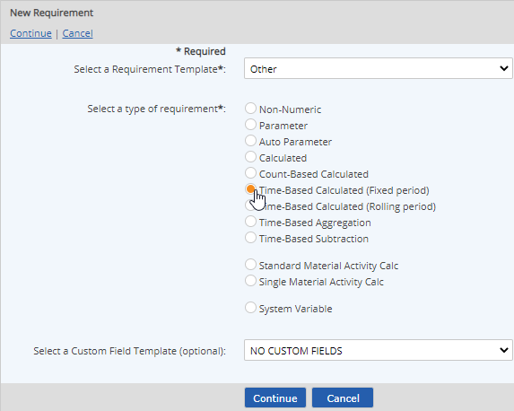

Select Time-Based Calculated (Fixed period) for the type.

To apply user-defined custom fields, select a Custom Field Template to apply. See Custom Field Templates.
Enter a Name.
You can add translated values for localization by clicking on the language symbol  .
.
In the Requirement Source section (optional) you can further define the requirement driver by selecting the Specific Citation.
Optional fields include:
Active Date/Inactive Date:The begin and end dates that a requirement applies (optional)
Description: General description of requirement
UOM: Unit of measure
Precision: Number of places to the right of the decimal point to display
Required Percentage of Data Points for Calculation: Percentage of data points that must be present for the calculation to be triggered. For more information, see Field Definitions for Time-Based Calculations.
Calculation purpose: Describe what you want to accomplish in the formula.
Review the factors available to be used in the calculation, shown in the Calculation Requirements and Calculation UDF Parameters boxes. If necessary, you can add requirements from other locations to make them available to the calculation. All of the Calculation Requirements and Calculation UDF Parameters shown will appear as buttons in the calculator window to use in building the calculation.
Calculation Requirements: Requirements under the same parent object are listed and will be available in the calculator automatically. To add additional requirements elsewhere in the system model, click Add and browse or search to find and select the requirements. To remove unnecessary requirements, click Remove (simplifies the calculator button selections if they are too numerous). See Calculation Requirements.
Calculation UDF Parameters: Shows additional calculation parameters available to be used in the calculation, which are derived from a Calculation Template applied to the parent object. See Calculation Templates.
Click New to add a calculation definition.

Set the Field Definitions for Time-Based Calculations for the calculation.
This is the period of time in which the data for the requirement are processed. It may be expressed as a number of hours, days, weeks, months, quarters, or years. Minute is also available for Workflow Aggregations only. (See Field Definitions for Time-Based Calculations.)
Intermediate Period: Optionally, you may select an Intermediate Period to enable intermediate calculations within the fixed period. For example, if the Fixed Period is 1 year, and the Intermediate Period is Quarterly, the calculation will trigger each quarter within the year with a rollup to date.
The calculation Begin Date determines the start of the period (calendar year or otherwise).

Click the calculator button to bring up the calculation builder.
Use the calculation builder to define the calculation. An aggregation type is required.
You may use the function buttons in the calculator or type directly in the box; you can also paste text. You can select requirement from the "Available requirements" box to add them to the formula.
Example: SUM([Daily Emissions])/1000
Enter the Calculation Begin Date, then click Update to save the formula value.
The calculation value can only be used in other calculations from the Begin Date.
Other options include:
Calculation Errors Handling: Can be used to define a value to be returned if the calculation produces an error. To use error handling, check the Use box and enter a value to be used in the case of the error type.
Expected Frequency: Produces a data warning if expected data is missing, defined as the number of data points expected per day.
Limits: Regulatory and internal limits may be set in order to produce data warnings when limits are exceeded. See Setting Regulatory Limits.